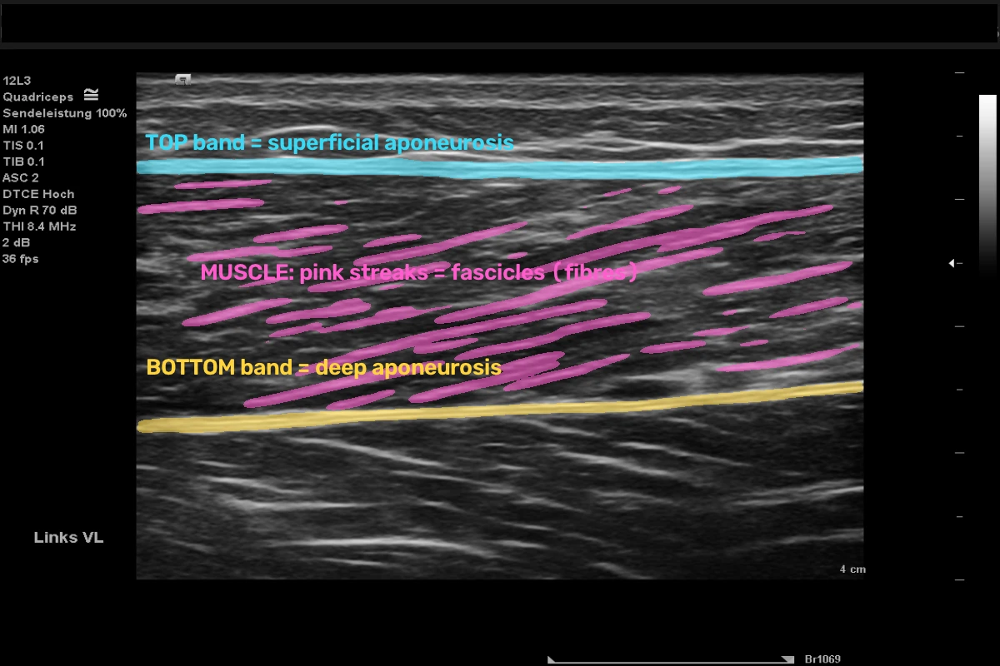
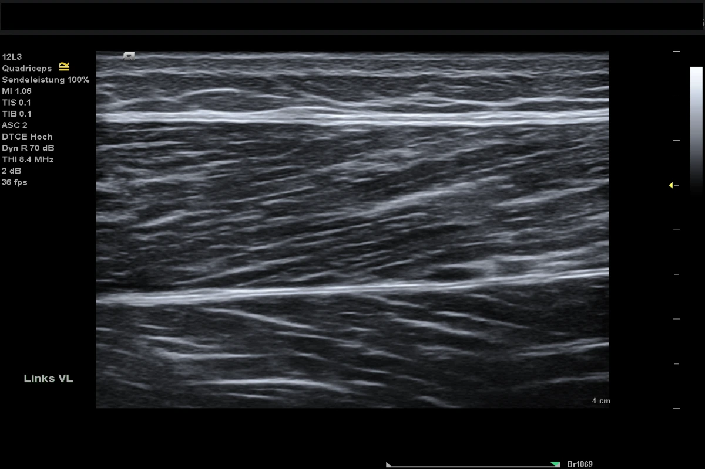

A fully image-computed pipeline across six scanner layouts, and what its validation set failed to predict
University of Southern California
November 2026 · v1 · competition closed 2026-11-14

Those three numbers — fibre angle, fibre length, muscle thickness — are how clinicians track whether a muscle is wasting after surgery, recovering in rehab, or adapting to training. They are measured constantly in sports medicine and physical therapy.
They are also measured by hand. A trained rater opens each scan and draws the lines with a mouse. It takes minutes per image, and it is not reliable: for novice raters, repeat measurements of the same image agree at a correlation as low as 0.00–0.30 [5]. The colours above were drawn by a person, for illustration. They do not come with the scan.

So the task is: take an unlabelled grey ultrasound screenshot from any of six different machines, find both connective-tissue sheets and the fibres between them, work out the physical scale from the on-screen ruler, and return three measurements that a clinician would accept — in under a second, with no human in the loop.
Across 309 such images, this pipeline lands closer to the consensus of seven expert raters than an individual expert does, and placed 38th of 690 teams. The rest of this report is how.
Measuring muscle architecture — pennation angle (PA), fascicle length (FL) and muscle thickness (MT) — from B-mode ultrasound is a routine but labour-intensive task in sports science and rehabilitation, and manual analysis is unreliable in the hands of novice raters. We describe a fully automated pipeline developed for the UMUD Challenge, in which 309 test images drawn from six different scanner screenshot layouts must be measured without any per-image human input.
Three components carry the result. First, a device-normalisation stage identifies the scanner family, reads the on-screen depth ruler for pixel-to-millimetre scale, crops the B-mode sector, and — critically — corrects for lateral anisotropy. Two of the six layouts are horizontally resampled screenshots in which a physical aperture is displayed over a different width, giving pixels that are not square: the Juniper 12L3 presents a 51.3 mm aperture across ≈57.5 mm of vertical-ruler units (R ≈ 1.12), the Lumify L12-4 a 34 mm aperture across ≈28.6 mm (R ≈ 0.84). Any angle measured in raw pixel coordinates on these devices is wrong. Second, two U-Net ensembles (ResNet-34 and EfficientNet-B3 encoders, 512 px, flip TTA) segment aponeuroses and fascicles. Third, a geometry stage derives the three quantities with explicit outlier rejection.
Our principal methodological contribution is in FL. The natural estimator — extending each detected fascicle fragment along its own direction to both aponeurosis lines — is exact only when the aponeuroses are parallel. When they converge by half-angle h, that chord exceeds MT/sin γ by a factor 1/(1 − cot²γ·tan²h), and we show empirically that human raters do not follow this blow-up. Substituting an estimator measured against the bisector of the two aponeuroses reduces the convergence-dependent bias from +8%/+14% to +6%/+5% across two anatomically different datasets, so that a single scalar calibration transfers between muscles.
On a 35-image benchmark labelled by seven expert raters, the pipeline scores 0.196 against 0.259 for an individual expert measured against the same seven-rater mean; on 31 images screened to exclude training look-alikes it scores 0.203. The entry placed 38th of 690 teams, rising 50 places from the provisional to the final leaderboard. We close by analysing the failure that dominated development: a parallel pipeline scoring 0.195 on our local benchmark scored 0.442 on the leaderboard, a 2.3× degradation that no amount of local validation predicted, and we argue that benchmark–target distribution mismatch, not model capacity, was the binding constraint throughout.
Keywords: musculoskeletal ultrasound · semantic segmentation · image calibration · anisotropic resampling · fascicle length · validation transfer
Skeletal muscle is not a uniform block of tissue. Its fibres run obliquely to the line of pull, bounded by two sheets of connective tissue called aponeuroses, and the geometry of that arrangement — how steeply the fibres are angled, how long they are, how thick the muscle is — determines how much force the muscle can produce and how fast it can shorten. Clinicians and sports scientists track these quantities to monitor atrophy, rehabilitation and training adaptation.
The measurement is made with B-mode ultrasound and, overwhelmingly, by hand: a rater opens the image in ImageJ or FIJI and draws lines. This is slow, and it is unreliable. A 2025 study of semi-automated analysis found within-rater intraclass correlations of 0.90–0.99 for fascicle length using an algorithm, against 0.00–0.30 for novice raters doing it manually [5]. The motivation for automation is not throughput. It is that the human measurement has a reproducibility problem.
Deep learning approaches followed the obvious path. Cronin et al. [1] trained U-Nets to segment fascicles and aponeuroses, reporting agreement with manual analysis within ≈2.1 mm in FL. Ritsche, Seynnes and Cronin packaged and substantially extended this work as DL_Track_US [2], now the standard open-source tool, which reports mean differences against manual analysis of −2.4 mm in FL, 0.6° in PA and −0.6 mm in MT [3].
These systems share an assumption that the UMUD Challenge deliberately breaks. They assume a known, consistent acquisition: one scanner, one export convention, a scale factor supplied by the operator. The challenge instead supplies 309 test images as screenshots from six different ultrasound systems, with no metadata, no stated scale, and no indication of which device produced which image. Everything — the scale, the crop, the pixel aspect ratio — must be recovered from the pixels.
For each of 309 longitudinal B-mode ultrasound images, predict pennation angle PA (degrees), fascicle length FL (mm) and muscle thickness MT (mm). Submissions are scored by a normalised mean absolute error, lower being better:
The denominators place the three quantities on a comparable footing; an error of 6° in PA costs the same as 12 mm in FL or 3 mm in MT. Ground truth was produced by two raters working in FIJI and averaged. Three conventions of theirs matter for reproducing their numbers: scale was taken from the vertical ruler only, with no aspect correction; MT was measured along vertical lines in image coordinates between the inner edges of the aponeuroses; and FL was a straight-line extrapolation of the fascicle between the two aponeuroses.
The 309 test images comprise six distinct screenshot layouts, each with its own ruler placement, B-mode sector position, and export geometry.
| Layout | Images | Share | Anisotropy R | Ruler |
|---|---|---|---|---|
| Juniper 1200×800 | 91 | 29.4% | ≈ 1.12 | read per image |
| Telemed 1200 | 90 | 29.1% | 1.00 | fixed constant |
| Lumify 1200×800 | 58 | 18.8% | ≈ 0.84 | read per image |
| Telemed 644 | 50 | 16.2% | 1.00 | fixed constant |
| Gray 853 | 12 | 3.9% | 1.00 | fixed constant |
| Telemed 512 | 8 | 2.6% | 1.00 | fixed constant |
A further structural feature: 28 of the test images form five-frame cine clips (sequential frames of the same contraction), identified by image similarity. Treating these frames as independent discards the knowledge that their true values should vary smoothly.
The competition training data supplies segmentation masks but no PA/FL/MT labels. Two externally labelled sets were therefore the only ground truth available for validating the geometry stage:
Neither originates from the test scanners. This fact governs everything in §6.
Every ultrasound screenshot carries a depth ruler. For the fixed-layout families (Telemed, Gray) the ruler spacing is constant and was measured once. For Juniper and Lumify, depth is operator-adjustable and the ruler must be read per image, locating tick positions by column-intensity profile and taking the modal spacing. The pipeline recovers px_per_mm and a crop box (l, t, r, b) isolating the B-mode sector from the surrounding interface chrome.
The non-obvious step, and the one with the largest effect on angles, concerns pixel aspect. A linear-array transducer has a fixed physical aperture. If the exported screenshot displays that aperture across a width that does not correspond to the same scale as the depth axis, the image is anisotropically resampled and pixels are not square.
Both affected families are quantifiable from manufacturer specifications:
| Probe | Aperture | Displayed as | R | Effect on angle |
|---|---|---|---|---|
| Juniper 12L3 | 51.3 mm | ≈ 57.5 mm | 1.12 | angles read too shallow |
| Lumify L12-4 | 34.0 mm | ≈ 28.6 mm | 0.84 | angles read too steep |
The Juniper figure has an independent explanation: 1.125 is exactly the factor obtained by stretching a 4:3 export to 3:2, which is consistent with a display-pipeline resampling rather than an acquisition property. The pipeline resamples all probability maps to square physical pixels before any geometry is computed, and exposes a --no-aniso flag so the correction can be ablated directly.
The organisers' raters took scale from the vertical ruler without aspect correction. A pipeline that corrects anisotropy is therefore measuring the anatomy more faithfully while measuring the label less faithfully, on exactly those two scanner families. We kept the correction — it is physically right, and it makes the geometry stage transferable to data labelled by other conventions — and absorbed the residual offset into the single FL calibration constant of §4.3. This is a deliberate trade, not an oversight, and it is the kind of choice that a leaderboard score alone cannot adjudicate.
Two separate U-Net ensembles are trained, one for aponeuroses and one for fascicles, each with a ResNet-34 [7] and an EfficientNet-B3 [8] encoder at 512 px, combined with horizontal-flip test-time augmentation. Training uses BCE + Dice loss, AdamW with a OneCycle schedule, mixed precision, and augmentation covering flips, affine transforms, contrast and gamma jitter, blur and speckle noise — the last chosen to match the dominant noise process in ultrasound.
Two data-preparation steps proved necessary. Exact duplicates were removed, reducing the fascicle set from 2,761 to 2,091 pairs and the aponeurosis set from 1,048 to 1,029. Fascicle masks were dilated by ≈3 px before downsampling, without which the structures of interest — single-pixel-wide lines — are destroyed by the resize.
| Target | ResNet-34 | EfficientNet-B3 | Earlier baseline |
|---|---|---|---|
| Aponeurosis | 0.836 | 0.846 | 0.49 |
| Fascicle | 0.568 | 0.577 | 0.02 |
Ultrasound frames are not independent. Consecutive frames of one scan are near-identical, and a random image-level split places them on both sides of the partition, producing a validation score that measures memorisation rather than generalisation. We therefore split at the level of scan-level fingerprint clusters: images are grouped by perceptual similarity and whole groups are assigned to train or validation.
We additionally report benchmark results on a 31-image subset explicitly screened to contain no training look-alike (§5). The gap between the full benchmark and that subset bounds the residual optimism.
Muscle thickness. The two aponeuroses are identified as the superficial and deep bands, with collinear fragments merged and lines fitted by least squares with MAD-based outlier rejection. MT is measured between inner edges at 25%, 50% and 75% of the width, matching the raters' convention.
Pennation angle. Fascicle fragments lying strictly between the two aponeurosis lines each receive a PCA direction fitted over all their pixels — DL_Track fits only the lower edge. Fragments vote by length; the length-weighted median defines the muscle's fascicle direction, and fragments deviating more than 8° are rejected as crossing speckle or vasculature. PA is taken as the signed angle between the fascicle direction and the deep aponeurosis, where DL_Track adds the absolute aponeurosis tilt irrespective of its direction. We admit a physiological range of 5–45°, against DL_Track's 10–30°, which clips genuinely steep or genuinely flat muscles.
Fascicle length, and why the obvious estimator is biased. The natural approach — call it FL_frag — extends each surviving fragment along its own direction to exact intersections with both aponeurosis lines and takes the length-weighted median. This is exact when the aponeuroses are parallel. They generally are not.
Let γ be the fascicle angle and let the two aponeuroses converge with half-angle h. The chord cut by extending a fragment to both lines relates to the bisector-referenced estimator by
so the two agree only as h → 0 and diverge as the aponeuroses converge. The empirical question is which behaviour human raters reproduce — and the answer is neither exactly, but the bisector form is much closer:
FL_bis measures γ to the bisector of the two aponeuroses; FL_frag extends fragments to both lines. Lower spread across datasets is what permits a single transferable calibration constant.| Estimator | arch (35 img) | calf-raise video | Spread |
|---|---|---|---|
FL_frag | +8% | +14% | 6 pts |
FL_bis | +6% | +5% | 1 pt |
Because FL_bis carries nearly the same bias on both datasets, a single scalar correction (÷1.059, fitted on the benchmark alone) transfers to the video without refitting. The fragment estimator would require a different constant per muscle, which is to say it would require labelled data for every new anatomy — precisely what automation is meant to avoid.
The 35-image benchmark carries seven independent expert measurements per image. This permits the most informative comparison available: scoring the pipeline against the seven-rater mean, and scoring a single held-out human expert against that same mean.
| PA (°) | FL (mm) | MT (mm) | UMUD score | |
|---|---|---|---|---|
| One human expert vs. 7-rater mean | 1.24 | 4.26 | 0.65 | 0.259 |
| This pipeline (LOO calibration) | 1.16 | 2.70 | 0.51 | 0.196 |
| Same, 31 images with no training look-alike | — | — | — | 0.203 |
On the 167-frame calf-raise video — a different muscle, a different contraction state, a different labelling convention — FL error is 1.82 mm with the calibration constant fitted only on the 35-image benchmark, against 2.54 mm uncalibrated. The earlier fragment-intersection estimator gave 6.45 mm and 3.76 mm respectively. That a constant fitted on one dataset improves a second, anatomically distinct one is the evidence that §4.3 describes a real geometric effect rather than a fitted artefact.
| Leaderboard | Rank | Score | Percentile |
|---|---|---|---|
| Provisional (public split) | 88 | 0.23258 | top 12.8% |
| Final (private split) | 38 | 0.26127 | top 5.5% |
| Pipeline geometry alone, final split | ≈ 44 | 0.26294 | top 6.4% |
The dominant technical difficulty of this project was not segmentation accuracy or geometry. It was that our validation set did not predict our test performance, and for most of the development window we could not measure the thing we were optimising.
A U-Net++ pipeline developed in parallel scored 0.195 on the arch benchmark — essentially identical to our final pipeline's 0.196 — and 0.442 on the leaderboard. A 2.3× degradation, invisible locally. Two systems indistinguishable on local validation differed by more than a factor of two on the target distribution.
The cause is distribution mismatch rather than overfitting in the usual sense. The benchmark comes from different scanners, different muscles and different raters than the test set. A model can therefore be better on the benchmark and worse on the test data by learning benchmark-specific conventions. With 35 labelled images, the temptation to tune against them is strong and the capacity to overfit them is effectively unlimited.
Three responses proved useful, and we state them as practice rather than as results:
arch while degrading the calf-raise video was treated as benchmark-specific and rejected, irrespective of its headline magnitude.A fully automated, image-only pipeline measures muscle architecture across six heterogeneous scanner layouts closer to a seven-rater expert consensus (0.196) than an individual expert achieves (0.259), and placed 38th of 690 teams in the UMUD Challenge. The two components we consider transferable are those derived from physics and geometry rather than fitted to data: correction of lateral anisotropy in resampled screenshot exports, and a convergence-corrected fascicle-length estimator whose single calibration constant carries between anatomically distinct datasets.
The methodological lesson is narrower and more general than the engineering. With 35 labelled images standing in for a 309-image target drawn from different scanners, local validation was an unreliable guide — demonstrably so, in a case where two pipelines indistinguishable on the benchmark differed by 2.3× on the target. Under that condition, preferring corrections that are derived over corrections that are tuned is not methodological fastidiousness. It is the only available defence, and the 50-place gain between the provisional and final leaderboards is the measure of what it was worth.